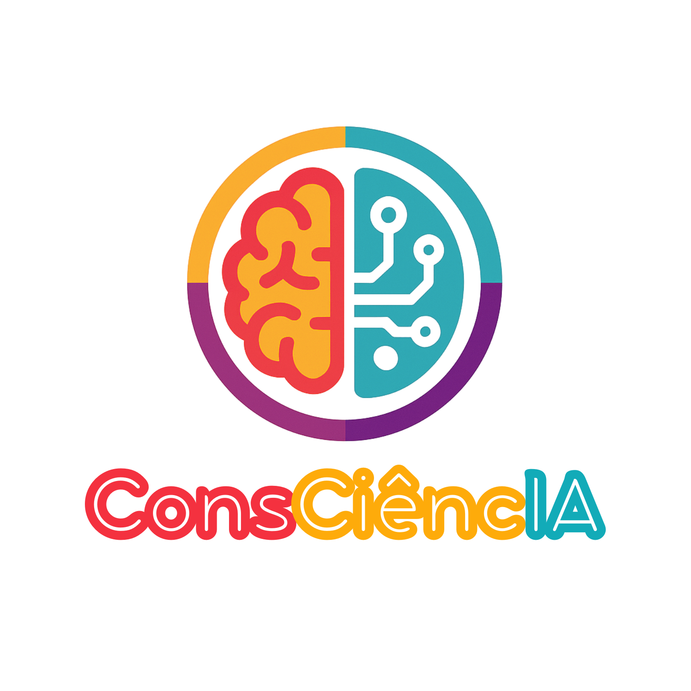
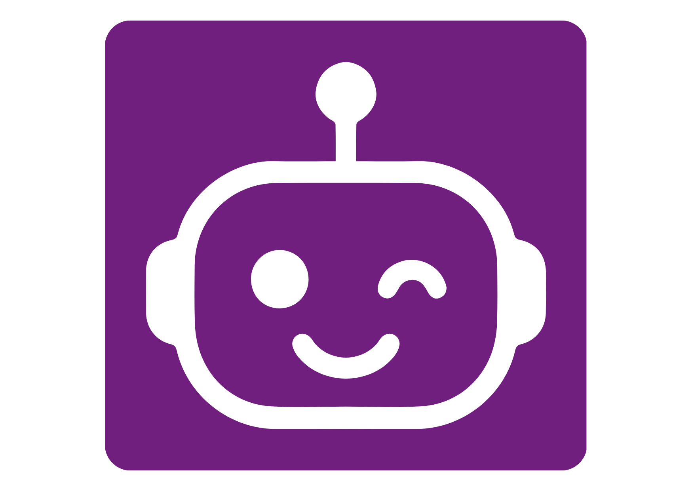

Sobre
O que é o ConsCiêncIA
A Inteligência Artificial (IA) tem assumido papel central na sociedade contemporânea, impactando diversos setores. Entretanto, no contexto brasileiro, grande parte das escolas públicas ainda enfrentam limitações de infraestrutura e pouco preparo dos docentes para a abordagem do tema em sala de aula. Diante desse cenário, torna-se necessário adotar metodologias acessíveis e inclusivas, capazes de democratizar o letramento em IA e estimular reflexões críticas desde a educação básica. Com esse propósito, foi concebida a proposta do jogo de tabuleiro ConsCiêncIA, voltado a alunos do Ensino Fundamental II e Médio. O objetivo é oferecer uma ferramenta pedagógica lúdica, capaz de apresentar a compreensão de conceitos fundamentais da IA e estimular a análise ética de seu uso mesmo em ambientes sem recursos digitais. Nesse sentido, a dinâmica do jogo combina sorte, perguntas e desafios criativos, estruturados por níveis de dificuldade e sistema de pontuação, favorecendo tanto a competição quanto a colaboração entre os participantes, assim promovendo o engajamento dos estudantes. O ConsCiêncIA apresenta-se como alternativa de baixo custo para apoiar professores e engajar alunos no debate sobre tecnologia, ampliando o acesso a conhecimentos sobre esta tecnologia emergente.
Como funciona o jogo
Dinâmica e categorias do ConsCiêncIA
Tabuleiro
Os jogadores avançam pelo tabuleiro ao lançar um dado, enfrentando desafios relacionados à IA.
Participantes
O jogo pode ser jogado por 2 até 8 participantes com mediação pedagógica.
Debate
O jogo estimula reflexão crítica e debate sobre Inteligência Artificial.
Pontuação
Os jogadores acumulam fichas ao responder corretamente os desafios.
Categorias de Cartas
Tipos de desafios presentes no jogo
Conhecimentos
Perguntas sobre conceitos fundamentais de IA.
Ética
Dilemas envolvendo privacidade, viés e responsabilidade.
Criativo
Cenários que estimulam imaginação e aplicações de IA.
Sorte
Eventos que tornam o jogo mais dinâmico.
Prática
QR code para atividades de IA aplicada.
Materiais
Recursos, publicações e conteúdos do projeto ConsCiêncIA
Artigo Científico — CONIC
Trabalho científico que apresenta o desenvolvimento do jogo ConsCiêncIA e seus primeiros resultados educacionais.
Ler artigoArtigo — SEI UTFPR
Publicação apresentada no Simpósio de Ensino e Inovação da UTFPR descrevendo a proposta pedagógica do jogo.
Ler artigoPremiação Nacional
O ConsCiêncIA foi premiado como melhor projeto em andamento no CONIC/SEMESP entre mais de 1.400 trabalhos.
Ver notíciaApresentação do Projeto
Slides utilizados para apresentar o ConsCiêncIA em eventos, palestras e atividades educacionais.
Abrir apresentação
Tutorial do Jogo
Vídeo explicativo com orientações para condução da rodada de cartas práticas e uso pedagógico do jogo.
Assistir vídeoManual do Mediador
Guia completo com instruções de aplicação do jogo em sala de aula e estratégias de mediação pedagógica.
Acessar manualFAQ
Perguntas Frequentes
-
O que é o ConsCiêncIA?
O ConsCiêncIA é um jogo de tabuleiro educativo baseado em Inteligência Artificial desplugada. Seu objetivo é introduzir conceitos de IA de forma acessível, estimulando reflexão ética, pensamento crítico e compreensão conceitual entre estudantes do Ensino Fundamental II e Ensino Médio.
-
O jogo precisa de computador ou internet?
Não. O ConsCiêncIA foi projetado para funcionar mesmo em ambientes com pouca infraestrutura tecnológica. Todo o jogo pode ser realizado apenas com o tabuleiro, cartas e mediador. A internet é opcional e pode ser usada apenas para acessar materiais complementares ou QR codes.
-
Qual é o objetivo educacional do jogo?
O jogo busca promover o letramento em Inteligência Artificial, permitindo que estudantes compreendam conceitos básicos da tecnologia, reflitam sobre seus impactos sociais e desenvolvam pensamento crítico sobre o uso responsável de sistemas baseados em IA.
-
Para quais turmas o jogo é indicado?
O ConsCiêncIA foi desenvolvido principalmente para estudantes do Ensino Fundamental II (6º ao 9º ano) e Ensino Médio, podendo também ser utilizado em atividades de extensão, oficinas educativas e formação de professores.
-
Quantos jogadores podem participar?
O jogo pode ser realizado com grupos de aproximadamente 2 a 8 participantes por tabuleiro. Em atividades com turmas maiores, recomenda-se dividir os estudantes em equipes.
-
Quanto tempo dura uma partida?
Uma partida geralmente dura entre 30 e 50 minutos, dependendo do número de jogadores e da profundidade das discussões realizadas durante o jogo.
-
O jogo exige conhecimento prévio em Inteligência Artificial?
Não. O jogo foi projetado justamente para introduzir conceitos de Inteligência Artificial de forma acessível, permitindo que estudantes aprendam gradualmente por meio da dinâmica do jogo.
-
Quais tipos de cartas existem no jogo?
O ConsCiêncIA possui diferentes tipos de cartas, incluindo perguntas de conhecimentos gerais, desafios criativos, reflexões éticas, cartas de sorte e atividades práticas relacionadas à IA.
-
Como funciona a pontuação?
Cada carta respondida corretamente gera pontos para os jogadores. A pontuação pode variar conforme o tipo de desafio e há bônus adicionais ao final do tabuleiro.
-
O jogo pode ser usado em projetos escolares?
Sim. O ConsCiêncIA pode ser utilizado em projetos pedagógicos, oficinas de tecnologia, atividades de extensão e programas de letramento digital nas escolas.
-
Existe material de apoio para professores?
Sim. O projeto disponibiliza um Manual do Mediador com orientações pedagógicas, explicações das regras do jogo e sugestões de aplicação em sala de aula.
-
Onde posso acessar os materiais do ConsCiêncIA?
Os materiais estão disponíveis na seção Materiais deste site, incluindo artigos científicos, apresentações, tutoriais e recursos educacionais relacionados ao jogo.